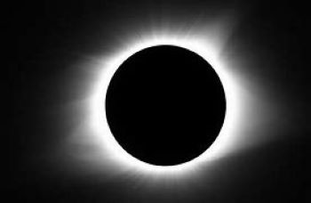

Un eclipse solar es un fenómeno astronómico que ocurre cuando la Luna oculta al Sol visto desde la Tierra. Esto ocurre cuando el Sol, la Luna y la Tierra están alineados, coincidiendo con la Luna nueva. La Luna se interpone entre la Tierra y el Sol, bloqueando parcial o totalmente la luz solar durante un breve período de tiempo.
Es un eclipse que cambia de un eclipse total a un eclipse anular a lo largo de su trayectoria.
Solo se puede observar de forma parcial.
Este tipo de eclipse ocurre cuando, en el momento de un eclipse, la Luna se encuentra a una distancia mayor de la Tierra que durante un eclipse total.
Al menos en algún lugar
de la superficie de la
Tierra puede observarse
completamente.
